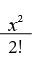
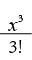
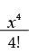
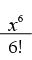
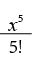
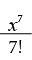
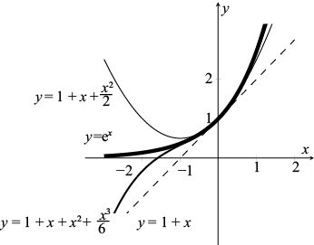
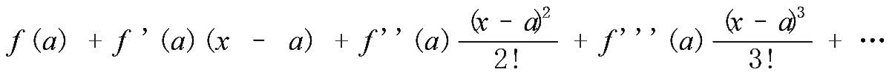

= (1 – x)–1，f (0) = 1。根据链式法则，我们可以算出该函数的前几阶导数：
= (1 – x)–1，f (0) = 1。根据链式法则，我们可以算出该函数的前几阶导数：在上一章的结尾部分证明欧拉公式的过程中，我们使用了下面这些神秘的公式：
ex = 1 + x +

+

+ …cosx = 1 – +

+ …sinx = x – +


+ …我们先针对这些公式做一些小游戏，再探究它们的由来。请大家对ex级数中的各项求导，并观察得到的结果。例如，根据幂函数求导公式，x4 / 4! 的导数是 (4x3) / 4! = x3 / 3!，正好是它的前一项。换句话说，如果对ex级数求导，结果仍然是这个级数，这与我们了解到的ex的特性一致。
对 x – x3/ 3! + x5/ 5! – x7/7! + …这个级数逐项求导，就会得到1–x2 /2! + x4/4! –x6/6! + …，与正弦函数的导数是余弦函数这个结论一致。同样，对余弦级数求导，就会得到正弦级数的相反数。此外，请大家注意，我们从余弦级数可以得出cos0 = 1，而且由于所有的指数都是偶数，因此cos(–x)的值与cosx相等，这与我们了解到的余弦函数的特性一致。[例如，(–x)4/4! = x4/4!。]正弦级数的情况与之相似，我们发现sin0 = 0，同时，由于所有指数都是奇数，因此sin(–x) = –sinx。
现在，我们来研究这些公式是如何产生的。本章已经介绍了大多数常用函数的求导方法，但有时候我们需要对函数进行多次求导，计算该函数的二阶、三阶甚至多阶导数，记作f ''(x)、f ''' (x)等。二阶导数f ''(x)表示点[x, f (x)]处函数斜率的变化率（亦称函数的凹凸性）。三阶导数表示二阶导数斜率的变化率，以此类推。
上面这些神秘的公式以英国数学家布鲁克·泰勒（Brook Taylor，1685—1731）的名字命名，叫作“泰勒级数”。如果函数 f (x) 有导数f '(x)、 f ''(x)、 f '''(x)等，那么在x取任意“十分接近”0的值时，都有：
f (x) = f (0) + f '(0)x + f ''(0)+ f '''(0)+ f ''''(0)+ …
“十分接近”是什么意思？对于某些函数而言，例如ex、sinx和cos x，x的所有值都十分接近0。但我们以后会发现，对于某些函数而言，x的值必须非常小，泰勒级数才会十分接近函数值。
我们来看幂函数 f (x)= ex的泰勒级数。由于ex 就是它自身的一阶（二阶、三阶……）导数，因此：
f (0) = f '(0)= f ''(0) = f '''(0) = … = e0 = 1
也就是说，ex的泰勒级数是1 + x + x2/2! + x3/3! + x4/4! + …，这与前面给出的结果一致。当x比较小时，我们只需计算为数不多的几项，就可以得出与确切答案非常接近的结果了。
我们用泰勒级数来计算存款的复利。在上一章，如果我们在银行里存1 000美元，年利率为5%，按连续复利的方式结算利息，那么到年底时，银行账户的金额就会变成1 000e0.05 = 1 051.27美元。利用泰勒多项式得到的二阶近似值是：
1 000 [1 + 0.05 + (0.05)2/2!] = 1 051.25美元
三阶近似值是1 051.27美元。
下图是函数 y = ex以及它的前三阶泰勒多项式的图像，以展现泰勒级数逼近函数值的效果。

随着我们增加泰勒多项式的阶数，近似值会越来越接近函数值，在x取接近于0的值时，近似效果最好。泰勒多项式为什么有这样的作用呢？一阶逼近（亦称线性逼近）的意思是，对于接近0的任意x，都有：
f (x) ≈ f (0) + f '(0)x
这是一条经过点 [0, f (0)]的直线，斜率为 f '(0)。同理，我们可以证明，n阶泰勒多项式在点[0, f (0)]处的一阶导数、二阶导数、三阶导数直至n阶导数都与原函数 f (x)相同。
我们还可以通过x接近除0以外的其他数字，来定义泰勒多项式和泰勒级数。具体来说，函数 f (x) 在基点 a 处的泰勒级数为：

它与x = 0时的情况一样，对于十分接近a的x，无论x是实数还是复数，泰勒级数都等于 f (x)。
接下来，我们来看函数 f (x) = sinx的泰勒级数。再次提醒大家，f '(x) = cosx，f ''(x) = –sinx，f '''(x) = –cosx，f ''''(x) = sinx = f (x)。在x取0时，f (x)的n阶导数会从 f (0)开始出现循环现象：0，1，0，–1，0，1，0，–1…。因此，x的所有偶数次幂都不会出现在泰勒级数中。也就是说，对于取任意值的x（单位为弧度），都有：
sinx = x – + – + …
同理，当 f (x) = cosx时，都有：
cosx = 1 – + – + …
最后，我再举一例。在这个例子中，当x取某些值而不是所有值时，泰勒级数等于函数本身。我们来看函数 f (x) = = (1 – x)–1，f (0) = 1。根据链式法则，我们可以算出该函数的前几阶导数：
f '(x) = (–1) (1 – x)–2(–1) = (1 – x)–2
f ''(x) = (–2)(1 – x)–3(–1) = 2(1 – x)–3
f '''(x) = (–6)(1 – x)–4(–1) = 3!(1 – x)–4
f ''''(x) = (–4!)(1 – x)–5(–1) = 4!(1 – x)–5
按照这个规律（或者使用归纳性证明法），就会发现 (1 – x)–1 的n阶导数为 n! (1 – x)–(n+1)。当x = 0时，该n阶导数就是 n!。也就是说，根据泰勒级数，我们可以得出：
= 1 + x + x2 + x3 + x4 + …
但是，这个等式只在x取–1到1之间的值时才成立。例如，如果x大于1，右边各项的值会越来越大，它的和无法确定。
我们将在下一章继续讨论泰勒级数。大家可能会想，把无穷多个数字加在一起，到底有什么意义呢？如何能求出它们的和呢？你有这样的想法很正常。在研究无穷大的本质时，我会尝试回答这个问题。与此同时，你还将接触到大量你意想不到、让你困惑、无法凭直觉理解但又充满美感的内容。
[1] 1立方英寸≈16.387立方厘米。——编者注